Terminal Workbench
A portable design system for terminals, editors, dashboards, sites — anywhere. One set of tokens, two mandatory modes, zero flourish.
A calm, dense, high-contrast working surface for people who live in panes, shells, logs, and code — not retro green-on-black novelty. Graphite backgrounds, crisp typography, restrained ANSI-style accents, readable code, and chrome that feels close to a modern terminal. The interface stays quiet; signal carries the color. When in doubt, remove the flourish.
- 01 / ChromeQuiet chrome, loud signalBackgrounds and borders stay near-monochrome graphite. Color is spent only on things that mean something.
- 02 / DensityDense but breathableTight vertical rhythm and small UI text, but generous 1.7 line-height in prose.
- 03 / AccentOne accent familyGreen primary, cyan secondary, warm amber. Never a rainbow — red, orange, violet exist only for meaning.
- 04 / VoiceMonospace as a UI voiceStructural labels use small uppercase mono with wide tracking — the “terminal manifest” idiom.
- 05 / DepthFlat, not glassyNo decorative gradients or shadows. Depth comes from layered flat surfaces and hairline borders.
Click any swatch to copy its current hex. Values shown are live — switch modes above and watch them resolve.
Section heading
Subsection heading
Minor heading
Quiet heading
Prose sits at 15px with a 1.7 line-height so long reading sessions don’t fatigue. Links look like this, emphasis highlights warm, and inline code reads as twb --mode=calm.
- Define token names
- Verify both modes
- Compact density pass
- Add drop shadows
- Ship it
| Service | Uptime | P95 | Status |
|---|---|---|---|
| gateway | 42d 07h | 18 ms | ● healthy |
| indexer | 42d 07h | 210 ms | ● degraded |
| webhooks | 0d 00h | — | ● down |
| metrics | 12d 19h | 34 ms | ● healthy |
// signal carries the color fn render(mode: Mode) { let accent = "#63f2ab"; let steps = 5; paint(accent, steps); }
-
Link the tokens
Grab tokens.css from this repo, or hotlink it:
html<link rel="stylesheet" href="https://cdn.jsdelivr.net/gh/Real-Fruit-Snacks/terminal-workbench-suite@main/tokens/tokens.css">
-
Build on the variables
Every token is a
--twb-*custom property. Dark is default; light follows the system, or force it withdata-themeon<html>.cssbody { background: var(--twb-bg-0); color: var(--twb-text-normal); font: 15px/1.7 var(--twb-font-ui); }
-
Or hand the spec to a tool
Building for a terminal, an editor, a slide deck? Give THEME-SPEC.md to any tool or AI — it carries the philosophy, both mode tables, and the component rules needed to reproduce the theme anywhere.
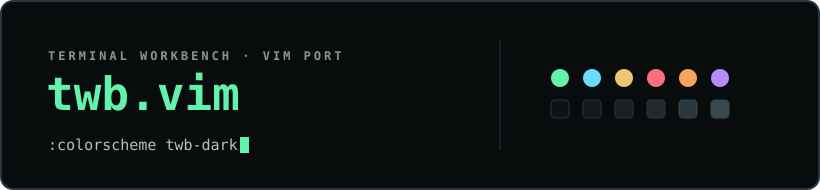
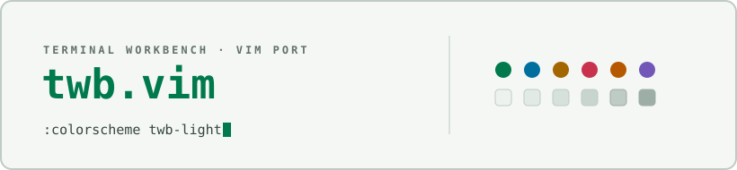
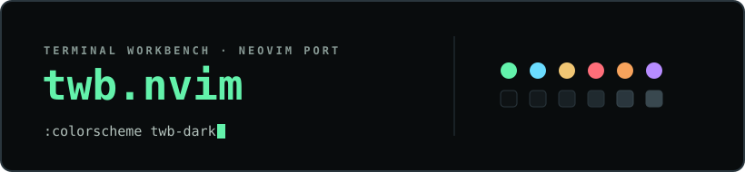
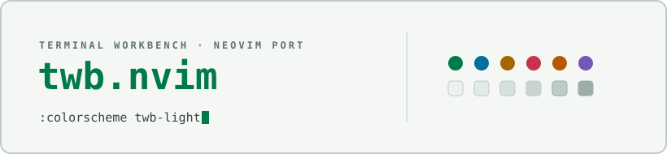
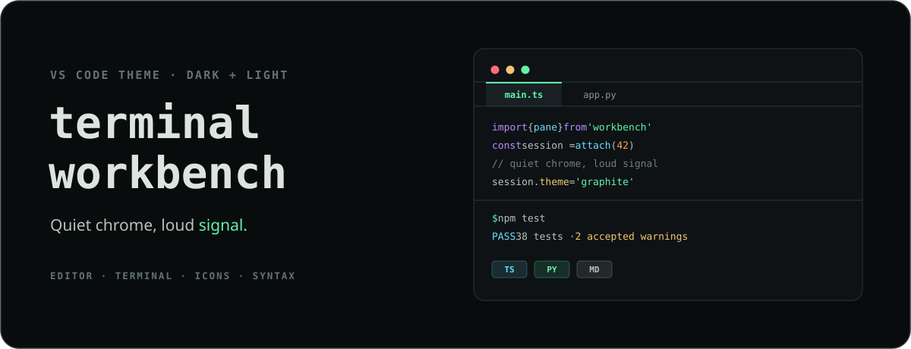
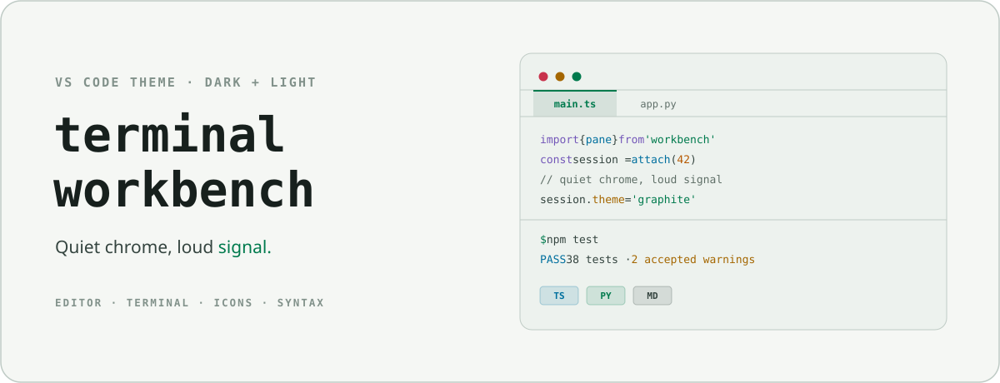
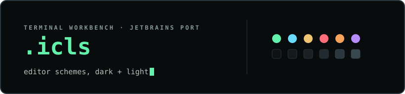
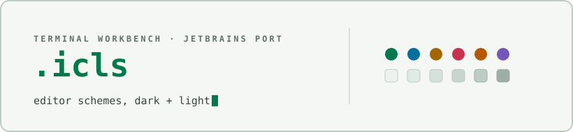
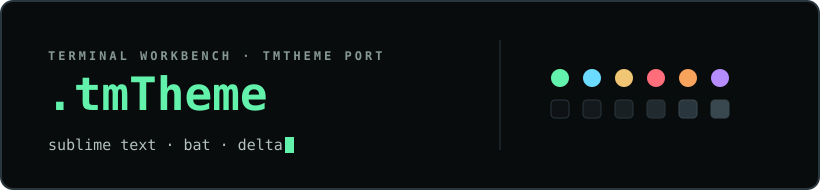
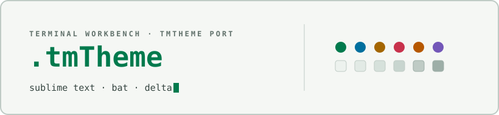
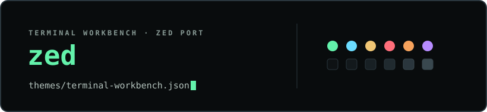
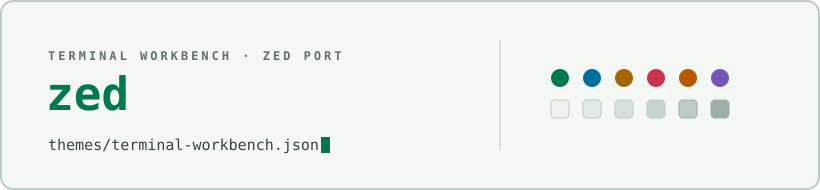
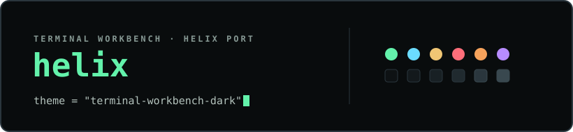
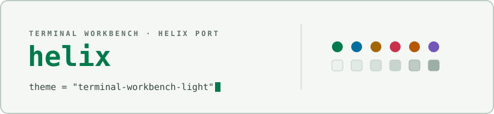
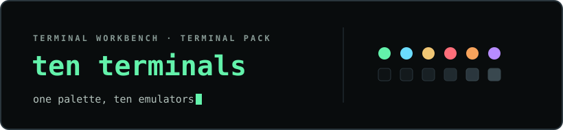
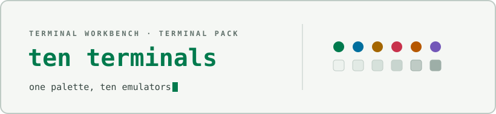
ghostty, alacritty, kitty, wezterm, putty, mobaxterm, gnome, konsole, foot, tmux.
View on GitHub →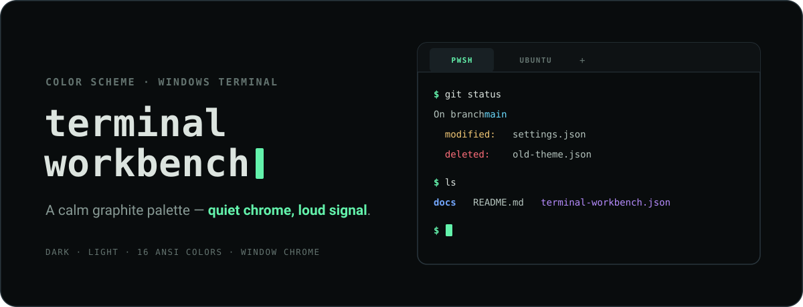
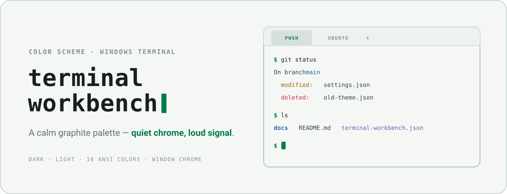
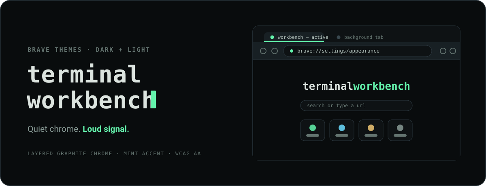
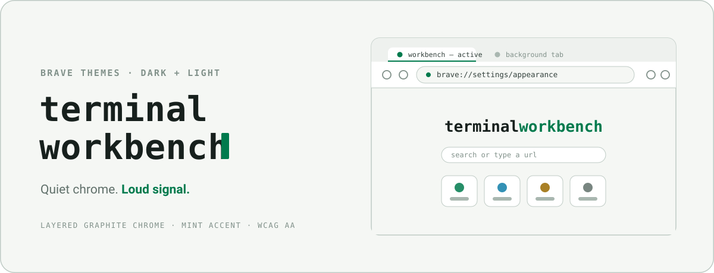
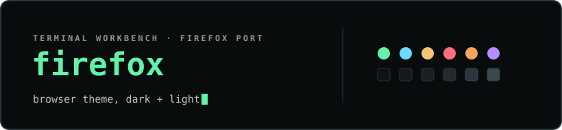
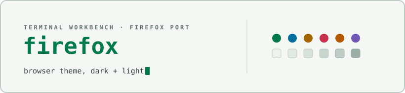
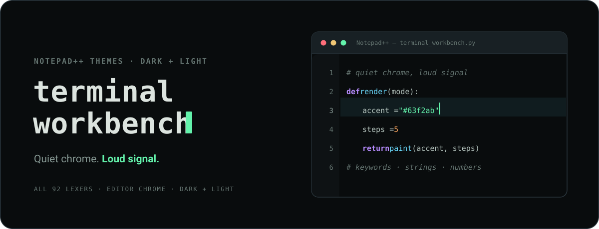
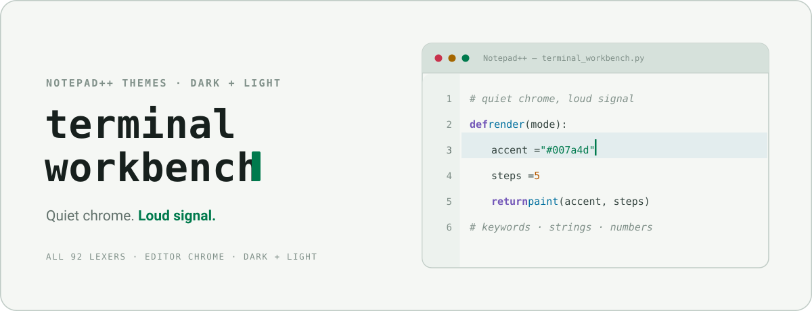
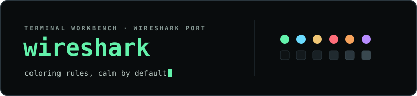
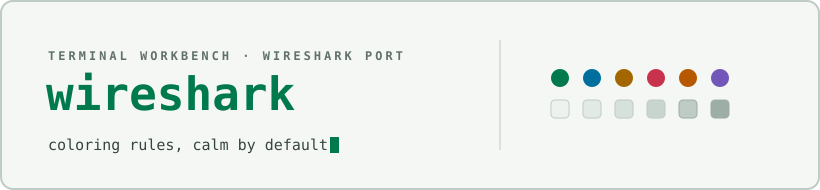
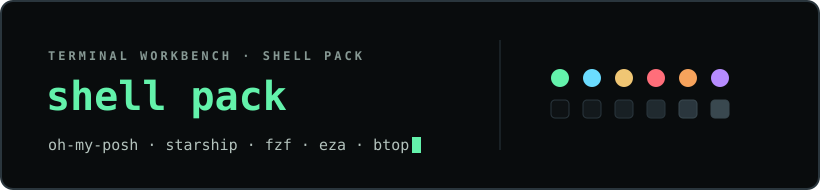
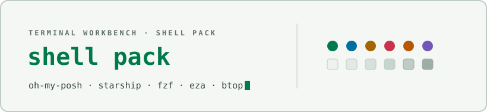
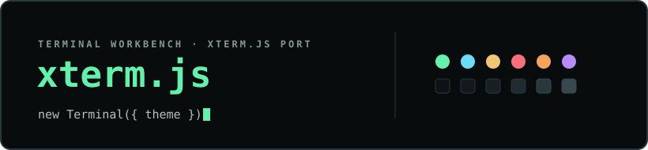
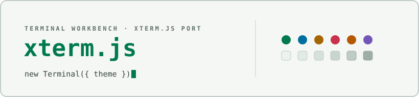
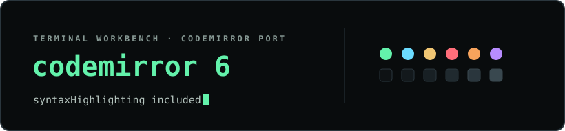
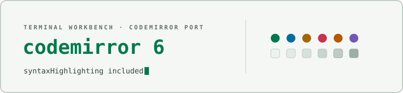
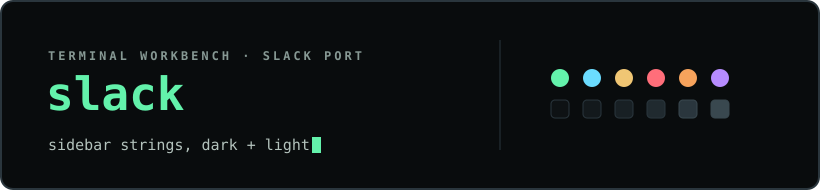
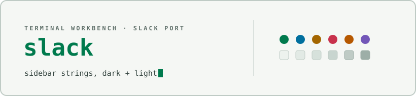
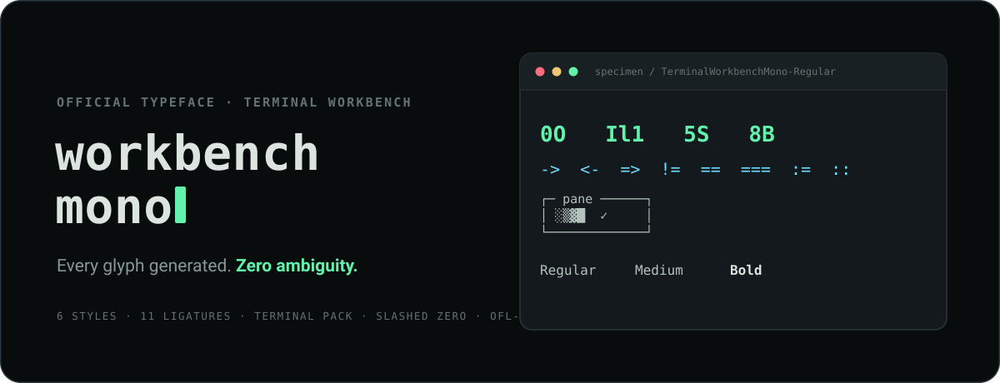
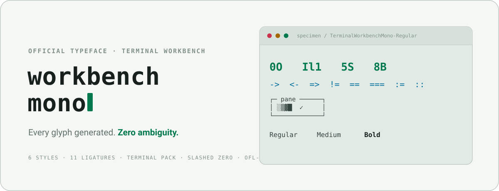